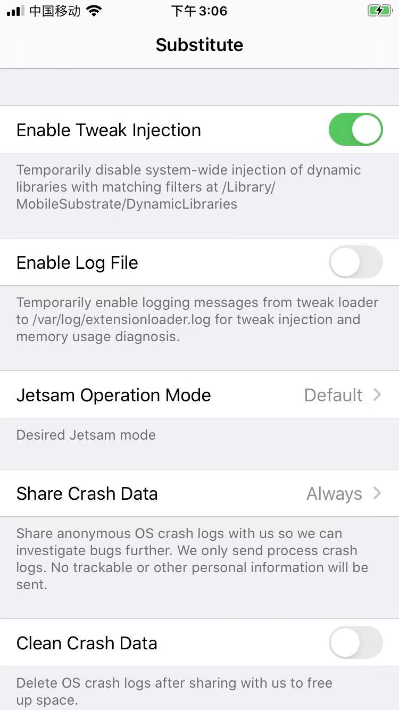
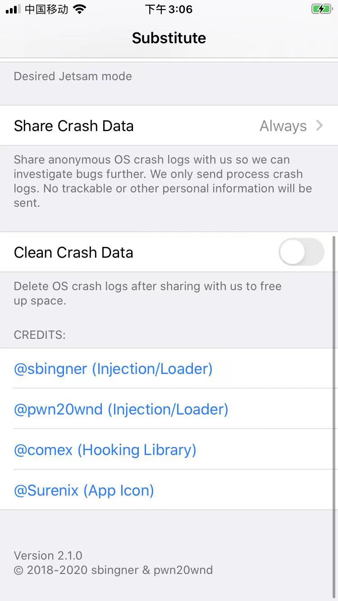
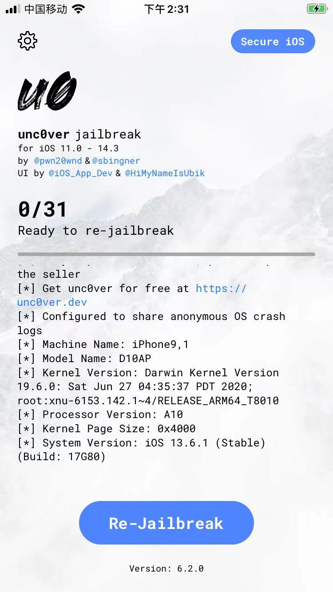
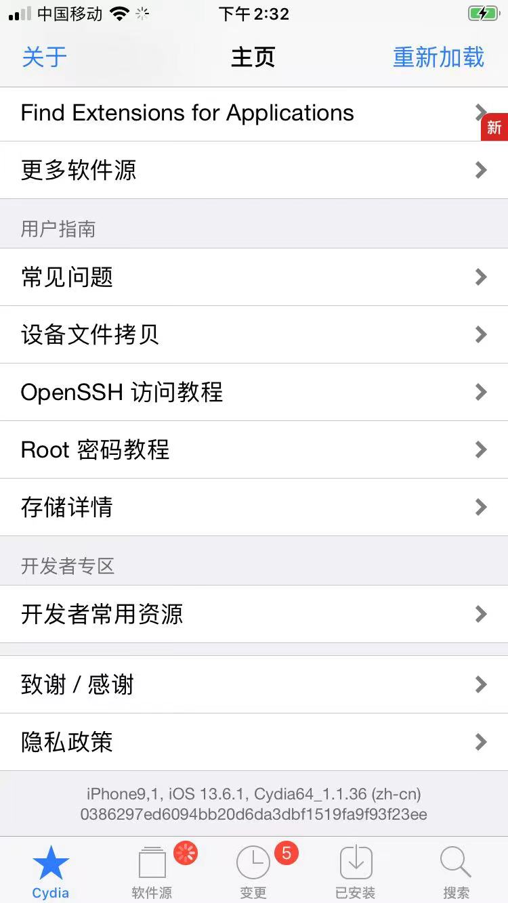

unc0ver越狱后
用unc0ver给iPhone越狱后，重启后，即可完成越狱。
【首次】初始化Substitute
iPhone重启后，往往会看到：
锁屏界面显示：
Substitute - request for permission


解锁后，点击：Always Allow

注：有时候是，此弹框，会出现unc0ver越狱期间：

然后点击Substitute进入界面，查看到相关设置：
- 
- 
unc0ver成功越狱后的效果
- 用unc0ver越狱成功后
- 越狱成功后的桌面：有了
unc0ver和Substitute - 打开unc0ver后会显示：已越狱
- 旧版unc0ver显示：
Re-Jailbreak- 
- 新版unc0ver显示：
Jailbroken- iOS 14.3的iPhone8，用unc0ver 8.0.2越狱后
- iOS 14.3的iPhone8，用unc0ver 8.0.2越狱后
- 旧版unc0ver显示：
- 爱思助手检测到iPhone是：已越狱
- iPhone8
- iPhone8
- 其他越狱工具能正常打开
- 对比：如果越狱失败，则打开对应工具会闪退崩溃
- Cydia

- 
iPhone9,1iOS 13.6.1Cydia64_1.1.36(zh-cn)
- 越狱成功后的桌面：有了